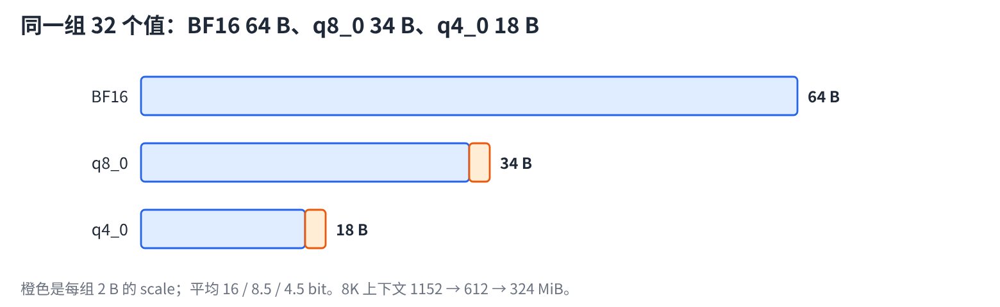
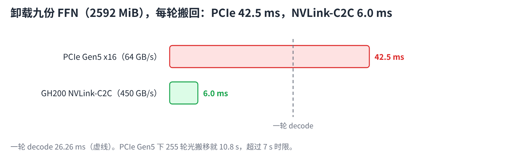
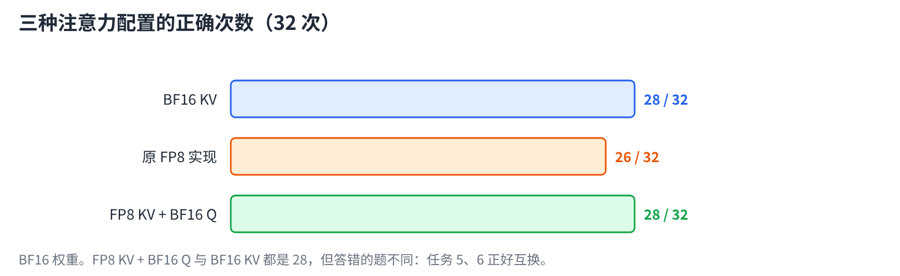
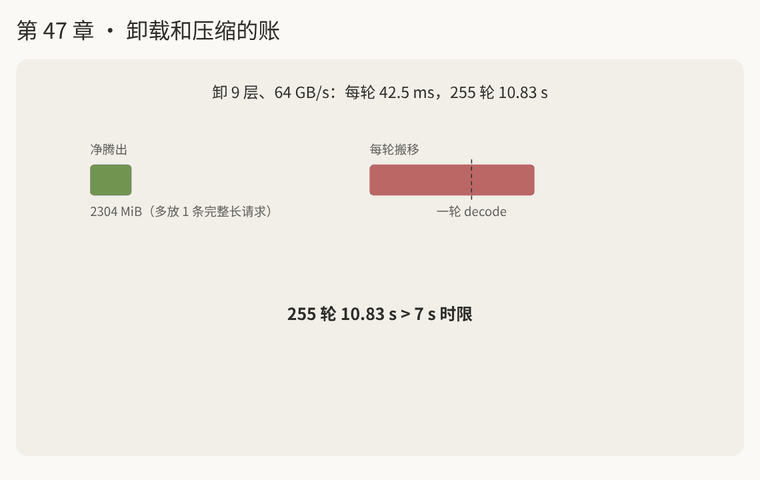

第 47 章 · 压缩与卸载：少存字节、轮流驻留，各付什么代价
本地运行
git clone https://github.com/wikieden/ai-infra-from-constraints
cd ai-infra-from-constraints/code/notebooks
pip install jupyterlab torch numpy
jupyter lab ch47_compress_offload.ipynb也可以下载后直接用 VS Code 打开 .ipynb 运行。需要 GPU 的章节在 Colab 里选「代码执行程序 → 更改运行时类型 → GPU」。
本章回答：2-bit 量化为什么平均是 2.625 bit？两个只差 2 GiB 的模型文件，为什么一个能接请求、一个连加载都不行？KV 从 BF16 换成 q8_0 一定更快吗？把权重卸载到主存，PCIe 上每轮要搬多久？换了数值格式，答案还对吗？
讲解日期：2026-11-24 · 上一章：第 46 章 KV 缓存的分配、复用与释放 · 下一章：第 48 章 推测解码
对应原文：materials/ai-infra-book/manuscripts/08-推理优化.md§8.4 L382–L499（图 8-23 到 8-28）
本章缩写：Q2_K / q8_0 / q4_0 = GGML 系列的分组量化格式 · GGUF = GGML 的模型文件格式 · NVLink-C2C = Grace 与 Hopper 之间的芯片到芯片链路。全部缩写见 缩写与术语表
讲解
第一步：分组量化：码值变短，scale 留着（2026-11-24）
类比：压缩照片。 像素用更少的位记，但每一小块都要记一个"亮度基准"；块越小、位数越低，这些基准在文件里占的比例越大。
原文 L386–L394：Q2_K 每组 256 个值：2-bit 码值 64 B + scale 等元数据 20 B = 84 B：
能不能装下：Qwen3-235B-A22B 的一个 Q2_K 文件约 79.81 GiB（码值和浮点 64.43 + 元数据 15.37），另一个 UD-Q2_K_XL 约 81.97 GiB。Apple M2 Max 标称 96 GB（89.41 GiB），留 8 GiB 给系统后剩 81.41 GiB：
| 文件 | 加载后剩 | 一条 8K 请求（KV 1.47 GiB） |
|---|---|---|
| 79.81 GiB | 1.60 GiB | 放得下，剩 0.13 |
| 81.97 GiB | 超出 0.56 GiB | 加载都不行 |
两个文件只差 2.16 GiB，就决定了能不能接请求；32K 上下文 KV 要 5.88 GiB，就得加内存或换放法。统一内存里文件映射的页面要访问时才驻留，执行要访问的总量超过内存就会反复换页。
一句话：低位宽的实际成本要算上每组的元数据；差一点点就可能放不下一条请求。
第二步：KV 压缩：省读取，付转换（2026-11-24）
类比：快递包装。 压缩打包少占车厢（少读字节），但收货后要拆包整理（格式转换）；包裹小时拆包的时间可能比省下的运输时间还多。
原文 L398–L428：每 32 个值一组，BF16 64 B；q8_0 32 B 码值 + 2 B scale = 34 B；q4_0 16 + 2 = 18 B：
（平均 8.5 / 4.5 bit。）16 条完整长请求 q8_0 约 9.86 GiB，能放进 12 GiB：共享去掉重复前缀，压缩减少每个值的字节，两条不同的路。

图 47-1 · 橙色是每组 2 B 的 scale。
8K 从 BF16 改 q8_0 少读 540 MiB，按有效带宽 1.16 TB/s 省约 0.49 ms：转换 0.2 ms 净省约 0.29 ms，转换 0.8 ms 反而多约 0.31 ms。
上下文越长越划算：H100 上 Llama-3.1-8B 的输出间隔拟合：BF16 \(6.44 + 4.37 \times 10^{-5}L\)，FP8 \(6.58 + 2.37 \times 10^{-5}L\) ms，交点约 7000 token：2K 时 6.53 vs 6.63，16K 时 7.16 vs 6.97 ms。
一句话：压缩 KV 少读 \(\Delta D\)，要 \(\Delta D/\beta\) 大于转换时间才更快；上下文越长越容易划算。
第三步：权重卸载：每一轮都要搬回来（2026-11-24）
类比：小厨房借邻居的冰箱。 腾出灶台的地方能多做几道菜（多放 KV），但每做一轮都要去邻居家取一次原料；路远（PCIe）就来不及。
原文 L432–L466：36 层每四层卸一层 FFN（每层 288 MiB），共九份 2592 MiB：
| 预取缓冲 | 净省 | 多放 8K 输入（1152） | 多放完整请求（1188） |
|---|---|---|---|
| 1 组 | 2304 MiB | 2 条 | 1 条 |
| 2 组（复制与计算重叠） | 2016 MiB | 1 条 | 1 条 |
每轮要把 2.72 GB 搬回：
| 链路 | 每轮下界 | 255 轮 |
|---|---|---|
| PCIe Gen5 x16（64 GB/s） | 42.5 ms（> 一轮 decode 26.26 ms） | 10.8 s（超 7 s 时限） |
| GH200 NVLink-C2C（450 GB/s） | 6.0 ms | 1.54 s |

图 47-2 · 预取能让搬移与计算重叠，但每轮字节不变。
先压缩再搬：原 \(S\)、压到 \(rS\)、链路 \(B\)、解压吞吐 \(R_{\mathrm{dec}}\)：
压到 1/4，PCIe Gen5 下解压要超过 85.3 GB/s；链路越快，对解压的要求越高。
场景代码：llama.cpp 用 -ngl 决定多少层放 GPU，其余留在主存（真实命令）：
./llama-server -m Qwen3-235B-A22B-Q2_K.gguf -ngl 60 -c 8192 --cache-type-k q8_0 --cache-type-v q8_0
一句话：卸载用每轮的搬移换显存；每轮字节 ÷ 链路带宽要小于一轮计算，否则搬移就是瓶颈。
第四步：换了格式，答案还对吗（2026-11-24）
类比：换了一种速记法。 记得快了，但可能有几道题抄错；而且错的不一定是同几道。
原文 L472–L496：Qwen3-8B、BF16 权重，八道固定任务 × 并发 1 / 4 × 各两次 = 32 次：
| 注意力配置 | 答对 |
|---|---|
| BF16 KV | 28 / 32 |
| 原 FP8 实现 | 26 / 32 |
| FP8 KV + BF16 Q | 28 / 32（但答错的题和 BF16 不一样） |
只改 Q 的精度结果就变了：要分别看 KV 的存储格式和 Q 的计算精度。任务 5 在 BF16 下四次全错、在 FP8 KV + BF16 Q 下四次全对，任务 6 正好相反。错误还会加时间：两次重试修正了错误，多了约 2.0 s 和 92 个 token；更快但更容易错，完成整个任务可能更慢。

图 47-3 · 总数一样的两种配置，错在不同的题上（任务 5、6 互换）；逐题对照见原书图 8-26 到 8-28。
一句话：比较格式要逐题对照，不只看总正确数；重试时间要算进请求的总耗时。
动画演示：卸载和压缩的账

可交互版：animations/47-compress-offload.html（滑块：卸载层数 0–36；链路 32 / 64 / 450 GB/s；开关：两组预取缓冲）。
怎么看：
- 左边一根条是腾出的显存：卸载总量减预取缓冲（第三步）；
- 中间是每轮搬移时间，和 26.26 ms 的一轮 decode 比；
- 右边是 255 轮累计，和 7 s 时限比；
- 播放：PCIe Gen5 卸 9 层（42.5 ms 超）→ 卸 4 层 → NVLink-C2C 卸 9 层（6 ms）。
练习与作答记录
题 1（第一步）：一种格式每组 128 个值，3-bit 码值，元数据 12 B。平均每值多少 bit？元数据占多少？
作答记录：（待作答）
题 2（第二步）：一条 16K 上下文 BF16 KV 2304 MiB，改 q4_0 少读多少 MiB？有效带宽 2 TB/s、转换 0.5 ms，净省多少？
作答记录：（待作答）
题 3（第三步）：卸载 6 层、每层 400 MiB，用 2 组预取缓冲。净省多少 MiB？PCIe Gen4（32 GB/s）每轮至少搬多久？
作答记录：（待作答）
原书练习 8-5、8-6（L468、L498）。想多练可以做。
口诀
照片压缩每块还要记基准，位越低基准越显眼；
包装压得小省车厢，拆包慢了白省；上下文越长越划算；
借邻居冰箱，每轮都去取，路远就来不及；
换速记法逐题对，错的题会换人。
本章复习卡片
I163（Q2_K 2.625 bit 与 M2 Max 上 2 GiB 之差）、I164（q8_0 34/64、q4_0 18/64；\(\Delta T = \Delta D/\beta - T_c\)；FP8 交点 7000 token）、I165（卸载九份 FFN：42.5 vs 6.0 ms；\(R_{\mathrm{dec}} > B/(1 - r)\)；质量要逐题对照）。练习做完后，按答错、卡住的地方再补。
附录 · 延伸阅读
留给以后深入学习用，不影响本章主线。★ 是建议先读的。
推荐阅读
| 读什么 | 读哪里 | 读它为了什么 |
|---|---|---|
| ★ AII 第 8 章 | §8.4 L382–L499 | 本章原文 |
| GGML / llama.cpp 文档 | 量化格式 | Q2_K、q8_0、q4_0 的布局 |
| FlexGen（ICML 2023） | 卸载调度 | 权重 / KV 卸载 |
| vLLM FP8 KV cache 文档 | 精度与 scale | KV 量化的实际做法 |
| 第 20 章 计算单元 | 低精度的两条路径 | 转换开销的前置 |
| 第 22 章 多芯片封装与互联 | H2D 与复用 | 卸载链路的前置 |
数学原理
- 分组位宽：\((n b + 8m)/n\)，\(m\) 为每组元数据字节。
- 净收益：省下的读取时间 − 新增的转换时间。
- 压缩传输：\(rS/B + S/R_{\mathrm{dec}} < S/B \iff R_{\mathrm{dec}} > B/(1 - r)\)。
公式清单
| 公式 | 意思 |
|---|---|
| bit/值 \(= (n b/8 + m) \cdot 8/n\) | 分组量化 |
| \(M_{q8} = M \cdot 34/64\)，\(M_{q4} = M \cdot 18/64\) | KV 格式 |
| \(\Delta T = \Delta D/\beta - T_c\) | 压缩的净节省 |
| \(T_{\mathrm{copy}} \ge S/B_{\mathrm{link}}\) | 卸载每轮 |
| \(R_{\mathrm{dec}} > B_{\mathrm{link}}/(1 - r)\) | 先压缩再搬 |
代码对照：把本章的数字用代码算一遍
代码
ai-infra/solutions/chapter-code/ch47_compress_offload.py，测试tests/test_ch47.py：
bash cd ai-infra/solutions/chapter-code uv run python ch47_compress_offload.py uv run pytest tests/test_ch47.py
| 讲义 | 写法 | 跑出来 |
|---|---|---|
| 第一步 | group_bits(256, 2, 20) |
2.625 |
| 第二步 | kv_mib(1152, fmt)、net_saving_ms(540, c) |
612 / 324；+0.29 / −0.31 ms |
| 第三步 | offload(buffers)、copy_ms、min_decode_gbps |
2304 / 2016；42.5 / 6.0 ms；85.3 GB/s |
代码里才看得到的 3 件事：
- M2 Max 的 96 GB 是十进制，换成 89.41 GiB 再减 8 GiB。
net_saving_ms代码得 +0.288 / −0.312，原文写 +0.287 / −0.313：带宽取整差异。- 2592 MiB = 2.718 GB，所以 PCIe Gen5 下是 42.5 ms 而不是 40.5 ms。
自己改一改（不影响练习答案）：
- 给
kv_mib加 FP8（每 128 个值一个 FP32 scale）格式。 - 用
offload找 PCIe Gen5 下每轮搬移不超过 26 ms 时最多能卸几层。 - 把输出间隔拟合式扫到 128K，画 BF16 和 FP8 的差。